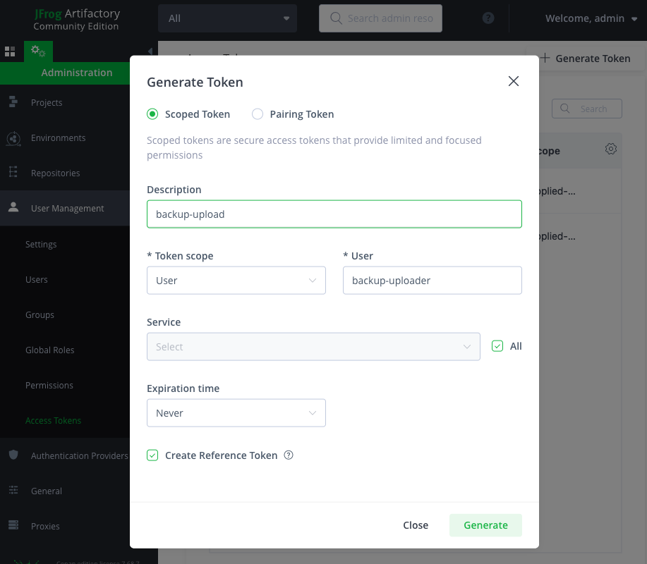
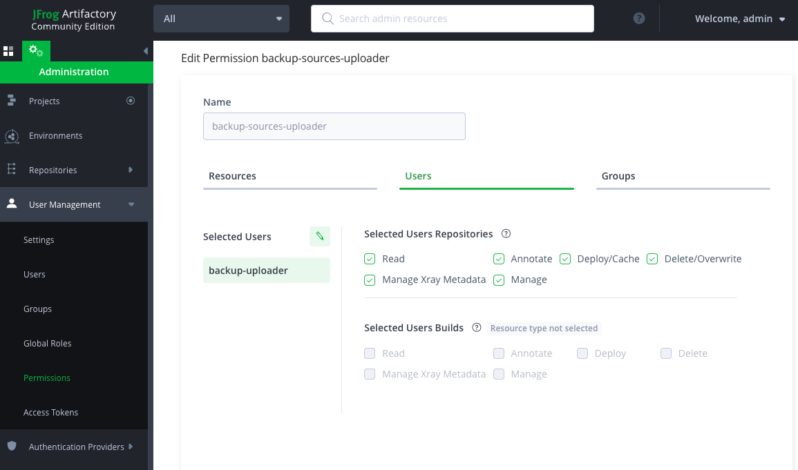

Creating an Artifactory backup repo for your sources¶
For the backup repository, we’ll create a generic Artifactory repo using the free Community Edition version.
For this, in the repositories section of the administration tab, we’ll create a new generic repository, and in this example we’ll imaginatively give it the name of backup-sources.
The URL of the remote should now be added to the global.conf file’s
core.sources:upload_url conf
core.sources:upload_url=https://myteam.myorg.com/artifactory/backup-sources/
Next, as we want this to be a public read repo, we’ll allow anonymous read access to our repo. See the official Artifactory documentation for a step-by-step guide on how to create one.
Now, to be able to upload contents, we’ll also create a new user from the User Management section, called backup uploader, and from the Access Tokens section, we’ll generate a reference token associated with the user
The generated token should now live in the source_credentials.json file:
{
"credentials": [
{
"url": "https://myteam.myorg.com/artifactory/backup-sources/",
"token": "cmVmdGtu1234567890abcdefghijklmnopqrstuvwxyz"
}
]
}
And last but not least, from the Permissions section we’ll give the user manage access to the new repository (which will automatically give it every other permission available, feel free to modify them according to your needs)
With this, access to our remote backup is now configured to allow anonymous read but authenticated upload.